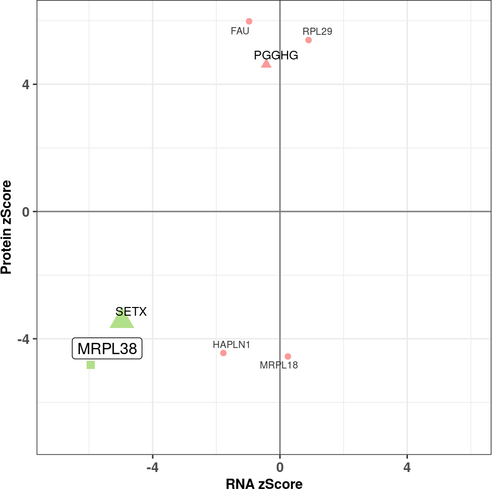
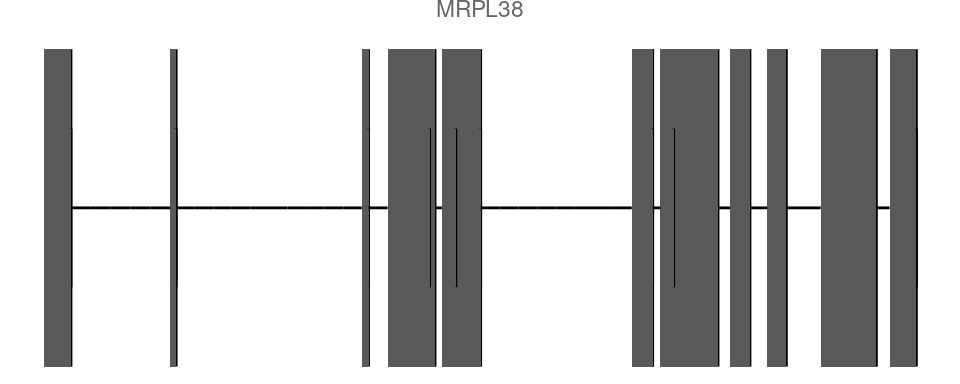
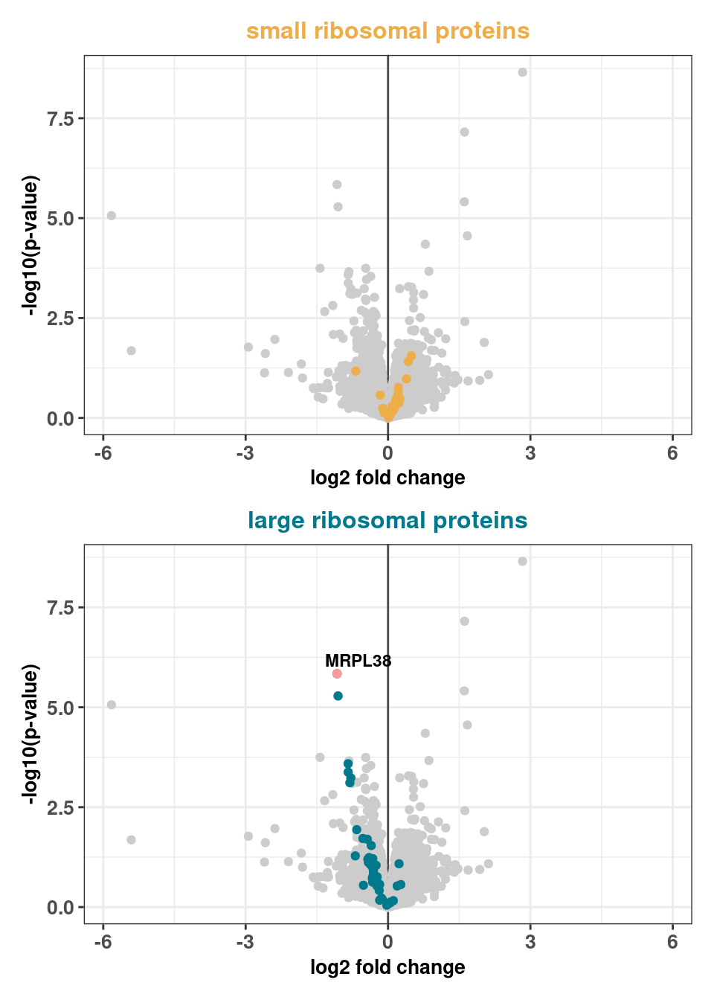
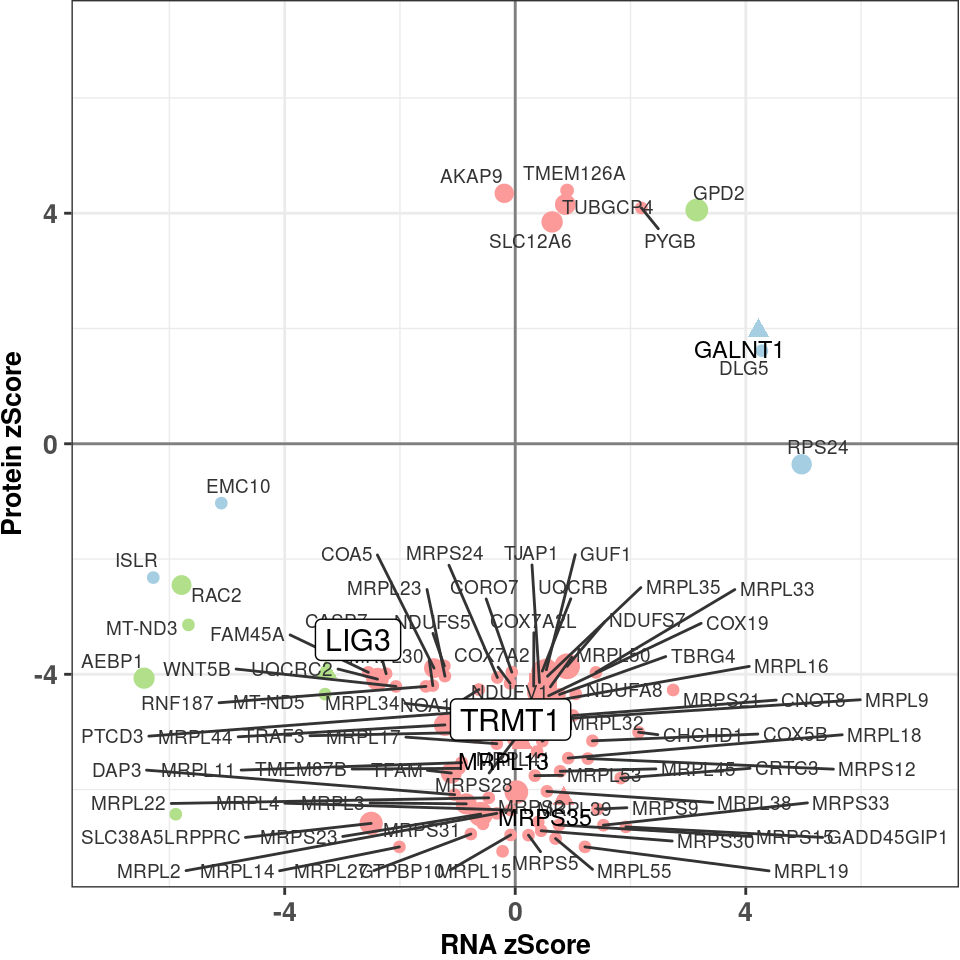
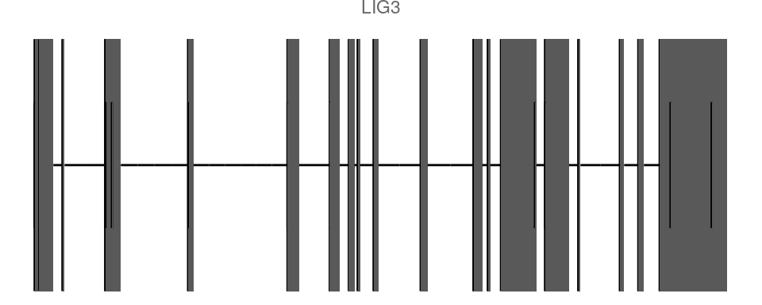

Fig3a MRPL38
samp <- rp[ SAMPLE_ID == "OM57837" & outlier_class != "non_outlier"]
fig3a <- ggplot(samp[gene_detected == "RNA and protein detected" ], aes(RNA_ZSCORE, PROTEIN_ZSCORE)) +
geom_vline(xintercept = 0, color = "grey50") +
geom_hline(yintercept = 0, color = "grey50") +
geom_point(aes(color= outlier_class, shape= gene_class, size = Semantic_sim )) +
xlab("RNA zScore") +
ylab("Protein zScore") +
scale_color_manual(breaks = c("non_outlier","RNA_outlier","Protein_outlier", "RNA_Protein_outlier"),
values = outlier_colors) +
scale_shape_manual(values = gene_shapes) +
scale_size(range = c(2.5, 6)) +
geom_text_repel(data= samp[gene_detected == "RNA and protein detected" & gene_class == "no rare variant" ],
mapping=aes(RNA_ZSCORE, PROTEIN_ZSCORE, label= geneID), colour= "grey20",
size= 2.5, show.legend = F)+
geom_text_repel(data= samp[gene_detected == "RNA and protein detected" & gene_class == "1 rare variant" & ( causal_gene ==F | is.na(causal_gene)) ],
mapping=aes(RNA_ZSCORE, PROTEIN_ZSCORE, label= geneID), colour= "black",
size= 3.1, show.legend = F) +
geom_label_repel(data= samp[gene_detected == "RNA and protein detected" & gene_class == "rare pot. biallelic variants" | causal_gene == T],
mapping=aes(RNA_ZSCORE, PROTEIN_ZSCORE, label= geneID ),
box.padding = unit(0.3, "lines"), colour= "black",
size= 4, show.legend = F ) +
coord_fixed( xlim = c( -7, 6 ), ylim = c( -7, 6 )) +
theme_bw() +
theme( axis.title.x= element_text( size= 10, margin = NULL,face="bold"),
axis.title.y= element_text( size= 10, margin = NULL,face="bold"),
legend.title = element_blank(),
axis.text.x = element_text(face="bold", size=10),
axis.text.y = element_text(face="bold", size=10),
legend.position = "none",
plot.margin = margin(0, 0, 0, 0, "cm") )
fig3a

pdf("/s/project/mitoMultiOmics/proteome_analysis/Figures/paper_figures/FIG3a.pdf",
width = 5, height =5, useDingbats=FALSE )
print(fig3a)
dev.off()
## png
## 2
Gene structure and variant
autoplot(edb, ~ gene_name == "MRPL38", stat = "reduce" , names.expr="MRPL38") +
theme_void() + scale_x_reverse()

dev.off()
## null device
## 1
###############################################################################
# Read CORUM complexes
# corum <- fread('/s/project/mitoMultiOmics/multiOMICs_integration/processed_data/Complexes/CORUM.tsv')
corum <- fread(snakemake@input$corum)
## Get Corum MRPL/S complexes
corum <- corum[ COMPLEX %in% c("28S ribosomal subunit, mitochondrial", "39S ribosomal subunit, mitochondrial")]
case_MRPL38 <- rp[SAMPLE_ID == "OM57837"]
case_MRPL38 <- case_MRPL38[!is.na(PROTEIN_LOG2FC )]
case_MRPL38[, small_sub := geneID %in% corum[COMPLEX == "28S ribosomal subunit, mitochondrial"]$geneID]
case_MRPL38[, large_sub := geneID %in% corum[COMPLEX == "39S ribosomal subunit, mitochondrial"]$geneID]
# Small subunit hilighted in volcano plot
ss <- ggplot(case_MRPL38, aes(PROTEIN_LOG2FC, -log10(PROTEIN_PVALUE) ))+
geom_vline(xintercept = 0, color = "grey30") +
geom_point( color = "gray80") +
geom_point( data = case_MRPL38[small_sub == T ],
aes(PROTEIN_LOG2FC, -log10(PROTEIN_PVALUE)), color = "#edae49" ) +
xlab("log2 fold change") +
ylab("-log10(p-value)") +
ggtitle("small ribosomal proteins")+
scale_x_continuous(limits = c( -max( abs(case_MRPL38$PROTEIN_LOG2FC) , na.rm = T),
max( abs(case_MRPL38$PROTEIN_LOG2FC) , na.rm = T) ))+
theme_bw()+
theme(plot.title = element_text(hjust = 0.5, size=12, color = "#edae49", face="bold"),
axis.title.x= element_text( size=10, margin = NULL,face="bold"),
axis.title.y= element_text( size=10, margin = NULL,face="bold"),
axis.text.x = element_text(face="bold", size=10),
axis.text.y = element_text(face="bold", size=10),
legend.title = element_blank() )
# Large subunit hilighted in volcano plot
ls <- ggplot(case_MRPL38, aes(PROTEIN_LOG2FC, -log10(PROTEIN_PVALUE) ))+
geom_vline(xintercept = 0, color = "grey30") +
geom_point(color = "gray80") +
geom_point( data = case_MRPL38[large_sub == T ],
aes(PROTEIN_LOG2FC, -log10(PROTEIN_PVALUE)), color = "#00798c" ) +
geom_point(data = case_MRPL38[ geneID == "MRPL38"],
aes(PROTEIN_LOG2FC, -log10(PROTEIN_PVALUE) ), color = "#FB9A99" ) +
geom_text_repel(data = case_MRPL38[ geneID == "MRPL38"], aes(PROTEIN_LOG2FC, -log10(PROTEIN_PVALUE), label = geneID), size = 3,fontface ="bold" ) +
xlab("log2 fold change") +
ylab("-log10(p-value)") +
ggtitle("large ribosomal proteins")+
scale_x_continuous(limits = c( -max( abs(case_MRPL38$PROTEIN_LOG2FC) , na.rm = T),
max( abs(case_MRPL38$PROTEIN_LOG2FC) , na.rm = T) ))+
theme_bw()+
theme(plot.title = element_text(hjust = 0.5, size=12, colour = "#00798c", face="bold"),
axis.title.x= element_text( size=10, margin = NULL,face="bold"),
axis.title.y= element_text( size=10, margin = NULL,face="bold"),
axis.text.x = element_text(face="bold", size=10),
axis.text.y = element_text(face="bold", size=10),
legend.title = element_blank() )
Fig_3c <- ss / ls
Fig_3c

pdf("/s/project/mitoMultiOmics/proteome_analysis/Figures/Fig_3c.pdf",
width = 5, height =7, useDingbats=FALSE )
print(Fig_3c)
dev.off()
## png
## 2
###############################################################################
Fig3e LIG3
samp <- rp[ SAMPLE_ID == "OM91786" & outlier_class != "non_outlier" ] #subset for patient
fig3e <- ggplot(samp[gene_detected == "RNA and protein detected" ], aes(RNA_ZSCORE, PROTEIN_ZSCORE)) +
geom_vline(xintercept = 0, color = "grey50") +
geom_hline(yintercept = 0, color = "grey50") +
geom_point(aes(color= outlier_class, shape= gene_class, size = Semantic_sim )) +
xlab("RNA zScore") +
ylab("Protein zScore") +
scale_color_manual(breaks = c("non_outlier","RNA_outlier","Protein_outlier", "RNA_Protein_outlier"),
values = outlier_colors) +
scale_shape_manual(values = gene_shapes) +
scale_size(range = c(2.5, 6)) +
geom_text_repel(data= samp[gene_detected == "RNA and protein detected" & gene_class == "no rare variant" ],
mapping=aes(RNA_ZSCORE, PROTEIN_ZSCORE, label= geneID), colour= "grey20",
size= 2.5, show.legend = F)+
geom_text_repel(data= samp[gene_detected == "RNA and protein detected" & gene_class == "1 rare variant" & ( causal_gene ==F | is.na(causal_gene)) ],
mapping=aes(RNA_ZSCORE, PROTEIN_ZSCORE, label= geneID), colour= "black",
size= 3.1, show.legend = F) +
geom_label_repel(data= samp[gene_detected == "RNA and protein detected" & gene_class == "rare pot. biallelic variants" | causal_gene == T],
mapping=aes(RNA_ZSCORE, PROTEIN_ZSCORE, label= geneID ),
box.padding = unit(0.3, "lines"), colour= "black",
size= 4, show.legend = F ) +
coord_fixed( xlim = c( -7, 7 ), ylim = c( -7, 7 )) +
theme_bw() +
theme( axis.title.x= element_text( size= 10, margin = NULL,face="bold"),
axis.title.y= element_text( size= 10, margin = NULL,face="bold"),
legend.title = element_blank(),
axis.text.x = element_text(face="bold", size=10),
axis.text.y = element_text(face="bold", size=10),
legend.position = "none",
plot.margin = margin(0, 0, 0, 0, "cm") )
fig3e

pdf("/s/project/mitoMultiOmics/proteome_analysis/Figures/paper_figures/FIG3e.pdf",
width = 5, height =5, useDingbats=FALSE )
print(fig3e)
dev.off()
## png
## 2
Gene structure and variant
autoplot(edb, ~ gene_name == "LIG3", stat = "reduce", names.expr="LIG3") +
theme_void()

dev.off()
## null device
## 1
unloadNamespace("ggbio")
IyctLS0KIycgdGl0bGU6IEZpZ3VyZSAzIEEgQyBFIAojJyBhdXRob3I6IHNtaXJub3ZkCiMnIHdiOgojJyAgaW5wdXQ6CiMnICAtIGNvbmZpZzogJ3NyYy9jb25maWcuUicKIycgIC0gcGF0aWVudF9vbWljczogJ2BzbSBjb25maWdbIlBST0NfREFUQSJdICsgIi9pbnRlZ3JhdGlvbi9wYXRpZW50X29taWNzX2Z1bGwuUkRTImAnCiMnICAtIHNhbXBsZV9hbm5vdGF0aW9uOiAnYHNtIGNvbmZpZ1siQU5OT1RBVElPTiJdYCcKIycgIC0gcGF0aWVudF9vcmdhbnM6ICdgc20gY29uZmlnWyJQUk9DX0RBVEEiXSArICIvSFBPL1BhdGllbnRzX2FmZmVjdGVkX29yZ2Fucy50c3YiYCcKIycgIC0gY29ydW06ICdgc20gY29uZmlnWyJQUk9DX0RBVEEiXSArICIvQ29tcGxleGVzL0NPUlVNLnRzdiJgJwojJyAgb3V0cHV0OgojJyBvdXRwdXQ6IAojJyAgIGh0bWxfZG9jdW1lbnQ6CiMnICAgIGNvZGVfZm9sZGluZzogaGlkZQojJyAgICBjb2RlX2Rvd25sb2FkOiBUUlVFCiMnLS0tCgoKZGV2Lm9mZigpCnNvdXJjZShzbmFrZW1ha2VAaW5wdXQkY29uZmlnKQoKCiMgQWRkIG5lY2Vzc2FyaWVzIGZvciBnZW5lIHN0cnVjdHVyZXMKc3VwcHJlc3NQYWNrYWdlU3RhcnR1cE1lc3NhZ2VzKHsKICBzdHJpbmdzQXNGYWN0b3JzPUYKICBsaWJyYXJ5KEd2aXopCiAgbGlicmFyeShHZW5vbWljUmFuZ2VzKQogIGxpYnJhcnkoZ2diaW8pCiAgbGlicmFyeShFbnNEYi5Ic2FwaWVucy52NzUpCn0pCgojIyBNYWtpbmcgYSBzaG9ydCBjdXQgdG8gZW5zZW1ibCAKZWRiIDwtIEVuc0RiLkhzYXBpZW5zLnY3NQoKCiMgTG9hZCBzYW1wbGUgYW5ub3RhdGlvbgojIHNhIDwtIGZyZWFkKCcvcy9wcm9qZWN0L21pdG9NdWx0aU9taWNzL211bHRpT01JQ3NfaW50ZWdyYXRpb24vZmlsZW1hcHBpbmdzL3Byb3Rlb21pY3NfYW5ub3RhdGlvbi50c3YnKQpzYSA8LSBmcmVhZChzbmFrZW1ha2VAaW5wdXQkc2FtcGxlX2Fubm90YXRpb24pCnNhIDwtIHNhW1VTRV9GT1JfUFJPVEVPTUlDU19QQVBFUiA9PSBUXQoKIyBSZWFkIGludGVncmF0ZWQgb21pY3MgZmlsZSAKIyBycCA8LSByZWFkUkRTKCIvcy9wcm9qZWN0L21pdG9NdWx0aU9taWNzL211bHRpT01JQ3NfaW50ZWdyYXRpb24vcHJvY2Vzc2VkX2RhdGEvaW50ZWdyYXRpb24vcGF0aWVudF9vbWljc19mdWxsLlJEUyIpICU+JSBhcy5kYXRhLnRhYmxlKCkKcnAgPC0gcmVhZFJEUyhzbmFrZW1ha2VAaW5wdXQkcGF0aWVudF9vbWljcykgJT4lIGFzLmRhdGEudGFibGUoKQoKCiMgTG9hZCBwYXRpZW50J3MgYWZmZWN0ZWQgb3JnYW5zCnBhdGllbnRzIDwtIGZyZWFkKHNuYWtlbWFrZUBpbnB1dCRwYXRpZW50X29yZ2FucykKIyBwYXRpZW50cyA8LSBmcmVhZCgnL3MvcHJvamVjdC9taXRvTXVsdGlPbWljcy9tdWx0aU9NSUNzX2ludGVncmF0aW9uL3Byb2Nlc3NlZF9kYXRhL0hQTy9QYXRpZW50c19hZmZlY3RlZF9vcmdhbnMudHN2JykKCgoKIyMjIyMjIyMjIyMjIyMjIyMjIyMjIyMjIyMjIyMjIyMjIyMjIyMjIyMjIyMjIyMjIyMjIyMjCiMnICMjIyBGaWczYSBNUlBMMzgKIysgZmlnLndpZHRoPTUsIGZpZy5oZWlnaHQ9NQoKc2FtcCA8LSBycFsgU0FNUExFX0lEID09ICJPTTU3ODM3IiAmIG91dGxpZXJfY2xhc3MgIT0gIm5vbl9vdXRsaWVyIl0KCmZpZzNhIDwtIGdncGxvdChzYW1wW2dlbmVfZGV0ZWN0ZWQgPT0gIlJOQSBhbmQgcHJvdGVpbiBkZXRlY3RlZCIgXSwgYWVzKFJOQV9aU0NPUkUsIFBST1RFSU5fWlNDT1JFKSkgKwogIGdlb21fdmxpbmUoeGludGVyY2VwdCA9IDAsIGNvbG9yID0gImdyZXk1MCIpICsKICBnZW9tX2hsaW5lKHlpbnRlcmNlcHQgPSAwLCBjb2xvciA9ICJncmV5NTAiKSArCiAgCiAgZ2VvbV9wb2ludChhZXMoY29sb3I9IG91dGxpZXJfY2xhc3MsIHNoYXBlPSBnZW5lX2NsYXNzLCBzaXplID0gU2VtYW50aWNfc2ltICkpICsgCiAgCiAgeGxhYigiUk5BIHpTY29yZSIpICsgCiAgeWxhYigiUHJvdGVpbiB6U2NvcmUiKSArCiAgc2NhbGVfY29sb3JfbWFudWFsKGJyZWFrcyA9IGMoIm5vbl9vdXRsaWVyIiwiUk5BX291dGxpZXIiLCJQcm90ZWluX291dGxpZXIiLCAiUk5BX1Byb3RlaW5fb3V0bGllciIpLAogICAgICAgICAgICAgICAgICAgICB2YWx1ZXMgPSBvdXRsaWVyX2NvbG9ycykgKwogIAogIHNjYWxlX3NoYXBlX21hbnVhbCh2YWx1ZXMgPSBnZW5lX3NoYXBlcykgKwogIAogIHNjYWxlX3NpemUocmFuZ2UgPSBjKDIuNSwgNikpICsKICAKICBnZW9tX3RleHRfcmVwZWwoZGF0YT0gc2FtcFtnZW5lX2RldGVjdGVkID09ICJSTkEgYW5kIHByb3RlaW4gZGV0ZWN0ZWQiICAmIGdlbmVfY2xhc3MgPT0gIm5vIHJhcmUgdmFyaWFudCIgXSwgCiAgICAgICAgICAgICAgICAgIG1hcHBpbmc9YWVzKFJOQV9aU0NPUkUsIFBST1RFSU5fWlNDT1JFLCBsYWJlbD0gZ2VuZUlEKSwgY29sb3VyPSAiZ3JleTIwIiwgCiAgICAgICAgICAgICAgICAgIHNpemU9IDIuNSwgc2hvdy5sZWdlbmQgPSBGKSsgCiAgCiAgZ2VvbV90ZXh0X3JlcGVsKGRhdGE9IHNhbXBbZ2VuZV9kZXRlY3RlZCA9PSAiUk5BIGFuZCBwcm90ZWluIGRldGVjdGVkIiAgJiBnZW5lX2NsYXNzID09ICIxIHJhcmUgdmFyaWFudCIgJiAoIGNhdXNhbF9nZW5lID09RiB8IGlzLm5hKGNhdXNhbF9nZW5lKSkgXSwgCiAgICAgICAgICAgICAgICAgIG1hcHBpbmc9YWVzKFJOQV9aU0NPUkUsIFBST1RFSU5fWlNDT1JFLCBsYWJlbD0gZ2VuZUlEKSwgY29sb3VyPSAiYmxhY2siLCAKICAgICAgICAgICAgICAgICAgc2l6ZT0gMy4xLCBzaG93LmxlZ2VuZCA9IEYpICsgCiAgCiAgZ2VvbV9sYWJlbF9yZXBlbChkYXRhPSBzYW1wW2dlbmVfZGV0ZWN0ZWQgPT0gIlJOQSBhbmQgcHJvdGVpbiBkZXRlY3RlZCIgJiBnZW5lX2NsYXNzID09ICJyYXJlIHBvdC4gYmlhbGxlbGljIHZhcmlhbnRzIiB8IGNhdXNhbF9nZW5lID09IFRdLCAKICAgICAgICAgICAgICAgICAgIG1hcHBpbmc9YWVzKFJOQV9aU0NPUkUsIFBST1RFSU5fWlNDT1JFLCBsYWJlbD0gZ2VuZUlEICksIAogICAgICAgICAgICAgICAgICAgYm94LnBhZGRpbmcgPSB1bml0KDAuMywgImxpbmVzIiksIGNvbG91cj0gImJsYWNrIiwgCiAgICAgICAgICAgICAgICAgICBzaXplPSA0LCBzaG93LmxlZ2VuZCA9IEYgKSArIAogIAogIGNvb3JkX2ZpeGVkKCB4bGltID0gYyggLTcsICA2ICksICB5bGltID0gYyggLTcsICA2ICkpICsgIAogIHRoZW1lX2J3KCkgKwogIAogIHRoZW1lKCBheGlzLnRpdGxlLng9IGVsZW1lbnRfdGV4dCggc2l6ZT0gMTAsIG1hcmdpbiA9IE5VTEwsZmFjZT0iYm9sZCIpLAogICAgICAgICBheGlzLnRpdGxlLnk9IGVsZW1lbnRfdGV4dCggc2l6ZT0gMTAsIG1hcmdpbiA9IE5VTEwsZmFjZT0iYm9sZCIpLAogICAgICAgICBsZWdlbmQudGl0bGUgPSBlbGVtZW50X2JsYW5rKCksCiAgICAgICAgIGF4aXMudGV4dC54ID0gZWxlbWVudF90ZXh0KGZhY2U9ImJvbGQiLCAgc2l6ZT0xMCksCiAgICAgICAgIGF4aXMudGV4dC55ID0gZWxlbWVudF90ZXh0KGZhY2U9ImJvbGQiLCAgc2l6ZT0xMCksCiAgICAgICAgIGxlZ2VuZC5wb3NpdGlvbiA9ICJub25lIiwKICAgICAgICAgcGxvdC5tYXJnaW4gPSBtYXJnaW4oMCwgMCwgMCwgMCwgImNtIikgKSAKZmlnM2EKCnBkZigiL3MvcHJvamVjdC9taXRvTXVsdGlPbWljcy9wcm90ZW9tZV9hbmFseXNpcy9GaWd1cmVzL3BhcGVyX2ZpZ3VyZXMvRklHM2EucGRmIiwgIAogICAgd2lkdGggPSA1LCBoZWlnaHQgPTUsICB1c2VEaW5nYmF0cz1GQUxTRSApCnByaW50KGZpZzNhKSAKZGV2Lm9mZigpCgoKIycgR2VuZSBzdHJ1Y3R1cmUgYW5kIHZhcmlhbnQgCiMrIGZpZy53aWR0aD01LCBmaWcuaGVpZ2h0PTIKYXV0b3Bsb3QoZWRiLCB+IGdlbmVfbmFtZSA9PSAiTVJQTDM4Iiwgc3RhdCA9ICJyZWR1Y2UiICwgIG5hbWVzLmV4cHI9Ik1SUEwzOCIpICsgCiAgdGhlbWVfdm9pZCgpICsgc2NhbGVfeF9yZXZlcnNlKCkgCmRldi5vZmYoKQoKCiMjIyMjIyMjIyMjIyMjIyMjIyMjIyMjIyMjIyMjIyMjIyMjIyMjIyMjIyMjIyMjIyMjIyMjIyMjIyMjIyMjIyMjIyMjIyMjIyMjIyMjIyMKCgojIFJlYWQgQ09SVU0gY29tcGxleGVzCiMgY29ydW0gPC0gZnJlYWQoJy9zL3Byb2plY3QvbWl0b011bHRpT21pY3MvbXVsdGlPTUlDc19pbnRlZ3JhdGlvbi9wcm9jZXNzZWRfZGF0YS9Db21wbGV4ZXMvQ09SVU0udHN2JykKY29ydW0gPC0gZnJlYWQoc25ha2VtYWtlQGlucHV0JGNvcnVtKQoKIyMgR2V0IENvcnVtIE1SUEwvUyBjb21wbGV4ZXMKY29ydW0gPC0gY29ydW1bIENPTVBMRVggJWluJSBjKCIyOFMgcmlib3NvbWFsIHN1YnVuaXQsIG1pdG9jaG9uZHJpYWwiLCAiMzlTIHJpYm9zb21hbCBzdWJ1bml0LCBtaXRvY2hvbmRyaWFsIildCgoKCgoKY2FzZV9NUlBMMzggPC0gcnBbU0FNUExFX0lEID09ICJPTTU3ODM3Il0gCmNhc2VfTVJQTDM4IDwtIGNhc2VfTVJQTDM4WyFpcy5uYShQUk9URUlOX0xPRzJGQyApXQoKY2FzZV9NUlBMMzhbLCBzbWFsbF9zdWIgOj0gZ2VuZUlEICVpbiUgY29ydW1bQ09NUExFWCA9PSAiMjhTIHJpYm9zb21hbCBzdWJ1bml0LCBtaXRvY2hvbmRyaWFsIl0kZ2VuZUlEXQpjYXNlX01SUEwzOFssIGxhcmdlX3N1YiA6PSBnZW5lSUQgJWluJSBjb3J1bVtDT01QTEVYID09ICIzOVMgcmlib3NvbWFsIHN1YnVuaXQsIG1pdG9jaG9uZHJpYWwiXSRnZW5lSURdCgoKIyBTbWFsbCBzdWJ1bml0IGhpbGlnaHRlZCBpbiB2b2xjYW5vIHBsb3QKc3MgPC0gZ2dwbG90KGNhc2VfTVJQTDM4LCBhZXMoUFJPVEVJTl9MT0cyRkMsIC1sb2cxMChQUk9URUlOX1BWQUxVRSkgKSkrCiAgZ2VvbV92bGluZSh4aW50ZXJjZXB0ID0gMCwgY29sb3IgPSAiZ3JleTMwIikgKwogIGdlb21fcG9pbnQoIGNvbG9yID0gImdyYXk4MCIpICsKICBnZW9tX3BvaW50KCBkYXRhID0gY2FzZV9NUlBMMzhbc21hbGxfc3ViID09IFQgXSwKICAgICAgICAgICAgICBhZXMoUFJPVEVJTl9MT0cyRkMsIC1sb2cxMChQUk9URUlOX1BWQUxVRSkpLCBjb2xvciA9ICIjZWRhZTQ5IiApICsgCiAgeGxhYigibG9nMiBmb2xkIGNoYW5nZSIpICsgCiAgeWxhYigiLWxvZzEwKHAtdmFsdWUpIikgKwogIGdndGl0bGUoInNtYWxsIHJpYm9zb21hbCBwcm90ZWlucyIpKwogIHNjYWxlX3hfY29udGludW91cyhsaW1pdHMgPSBjKCAtbWF4KCBhYnMoY2FzZV9NUlBMMzgkUFJPVEVJTl9MT0cyRkMpICwgbmEucm0gPSBUKSwgCiAgICAgICAgICAgICAgICAgICAgICAgICAgICAgICAgIG1heCggYWJzKGNhc2VfTVJQTDM4JFBST1RFSU5fTE9HMkZDKSAsIG5hLnJtID0gVCkgKSkrICAKICB0aGVtZV9idygpKwogIHRoZW1lKHBsb3QudGl0bGUgPSBlbGVtZW50X3RleHQoaGp1c3QgPSAwLjUsIHNpemU9MTIsIGNvbG9yID0gIiNlZGFlNDkiLCBmYWNlPSJib2xkIiksCiAgICAgICAgYXhpcy50aXRsZS54PSBlbGVtZW50X3RleHQoIHNpemU9MTAsIG1hcmdpbiA9IE5VTEwsZmFjZT0iYm9sZCIpLAogICAgICAgIGF4aXMudGl0bGUueT0gZWxlbWVudF90ZXh0KCBzaXplPTEwLCBtYXJnaW4gPSBOVUxMLGZhY2U9ImJvbGQiKSwKICAgICAgICBheGlzLnRleHQueCA9IGVsZW1lbnRfdGV4dChmYWNlPSJib2xkIiwgIHNpemU9MTApLAogICAgICAgIGF4aXMudGV4dC55ID0gZWxlbWVudF90ZXh0KGZhY2U9ImJvbGQiLCAgc2l6ZT0xMCksCiAgICAgICAgbGVnZW5kLnRpdGxlID0gZWxlbWVudF9ibGFuaygpICkKCiMgTGFyZ2Ugc3VidW5pdCBoaWxpZ2h0ZWQgaW4gdm9sY2FubyBwbG90CmxzIDwtIGdncGxvdChjYXNlX01SUEwzOCwgYWVzKFBST1RFSU5fTE9HMkZDLCAtbG9nMTAoUFJPVEVJTl9QVkFMVUUpICkpKwogIGdlb21fdmxpbmUoeGludGVyY2VwdCA9IDAsIGNvbG9yID0gImdyZXkzMCIpICsKICBnZW9tX3BvaW50KGNvbG9yID0gImdyYXk4MCIpICsKICBnZW9tX3BvaW50KCBkYXRhID0gY2FzZV9NUlBMMzhbbGFyZ2Vfc3ViID09IFQgXSwKICAgICAgICAgICAgICBhZXMoUFJPVEVJTl9MT0cyRkMsIC1sb2cxMChQUk9URUlOX1BWQUxVRSkpLCBjb2xvciA9ICIjMDA3OThjIiApICsgCiAgZ2VvbV9wb2ludChkYXRhID0gY2FzZV9NUlBMMzhbIGdlbmVJRCA9PSAiTVJQTDM4Il0sIAogICAgICAgICAgICAgYWVzKFBST1RFSU5fTE9HMkZDLCAtbG9nMTAoUFJPVEVJTl9QVkFMVUUpICksIGNvbG9yID0gIiNGQjlBOTkiICkgKwogIGdlb21fdGV4dF9yZXBlbChkYXRhID0gY2FzZV9NUlBMMzhbIGdlbmVJRCA9PSAiTVJQTDM4Il0sIGFlcyhQUk9URUlOX0xPRzJGQywgLWxvZzEwKFBST1RFSU5fUFZBTFVFKSwgbGFiZWwgPSAgZ2VuZUlEKSwgc2l6ZSA9IDMsZm9udGZhY2UgPSJib2xkIiApICsKICB4bGFiKCJsb2cyIGZvbGQgY2hhbmdlIikgKyAKICB5bGFiKCItbG9nMTAocC12YWx1ZSkiKSArCiAgZ2d0aXRsZSgibGFyZ2Ugcmlib3NvbWFsIHByb3RlaW5zIikrCiAgCiAgc2NhbGVfeF9jb250aW51b3VzKGxpbWl0cyA9IGMoIC1tYXgoIGFicyhjYXNlX01SUEwzOCRQUk9URUlOX0xPRzJGQykgLCBuYS5ybSA9IFQpLCAKICAgICAgICAgICAgICAgICAgICAgICAgICAgICAgICAgbWF4KCBhYnMoY2FzZV9NUlBMMzgkUFJPVEVJTl9MT0cyRkMpICwgbmEucm0gPSBUKSApKSsgCiAgdGhlbWVfYncoKSsKICB0aGVtZShwbG90LnRpdGxlID0gZWxlbWVudF90ZXh0KGhqdXN0ID0gMC41LCBzaXplPTEyLCBjb2xvdXIgPSAiIzAwNzk4YyIsIGZhY2U9ImJvbGQiKSwKICAgICAgICBheGlzLnRpdGxlLng9IGVsZW1lbnRfdGV4dCggc2l6ZT0xMCwgbWFyZ2luID0gTlVMTCxmYWNlPSJib2xkIiksCiAgICAgICAgYXhpcy50aXRsZS55PSBlbGVtZW50X3RleHQoIHNpemU9MTAsIG1hcmdpbiA9IE5VTEwsZmFjZT0iYm9sZCIpLAogICAgICAgIGF4aXMudGV4dC54ID0gZWxlbWVudF90ZXh0KGZhY2U9ImJvbGQiLCAgc2l6ZT0xMCksCiAgICAgICAgYXhpcy50ZXh0LnkgPSBlbGVtZW50X3RleHQoZmFjZT0iYm9sZCIsICBzaXplPTEwKSwKICAgICAgICBsZWdlbmQudGl0bGUgPSBlbGVtZW50X2JsYW5rKCkgKQoKIysgZmlnLndpZHRoPTUsIGZpZy5oZWlnaHQ9NwpGaWdfM2MgPC0gc3MgLyBscwpGaWdfM2MKCgpwZGYoIi9zL3Byb2plY3QvbWl0b011bHRpT21pY3MvcHJvdGVvbWVfYW5hbHlzaXMvRmlndXJlcy9GaWdfM2MucGRmIiwgIAogICAgd2lkdGggPSA1LCBoZWlnaHQgPTcsICB1c2VEaW5nYmF0cz1GQUxTRSApCnByaW50KEZpZ18zYykgCmRldi5vZmYoKQoKCgoKCiMjIyMjIyMjIyMjIyMjIyMjIyMjIyMjIyMjIyMjIyMjIyMjIyMjIyMjIyMjIyMjIyMjIyMjIyMjIyMjIyMjIyMjIyMjIyMjIyMjIyMjIyMKCiMnICMjIyBGaWczZSBMSUczCiMrIGZpZy53aWR0aD01LCBmaWcuaGVpZ2h0PTUKc2FtcCA8LSBycFsgU0FNUExFX0lEID09ICJPTTkxNzg2IiAgJiBvdXRsaWVyX2NsYXNzICE9ICJub25fb3V0bGllciIgXSAjc3Vic2V0IGZvciBwYXRpZW50CgpmaWczZSA8LSBnZ3Bsb3Qoc2FtcFtnZW5lX2RldGVjdGVkID09ICJSTkEgYW5kIHByb3RlaW4gZGV0ZWN0ZWQiIF0sIGFlcyhSTkFfWlNDT1JFLCBQUk9URUlOX1pTQ09SRSkpICsKICBnZW9tX3ZsaW5lKHhpbnRlcmNlcHQgPSAwLCBjb2xvciA9ICJncmV5NTAiKSArCiAgZ2VvbV9obGluZSh5aW50ZXJjZXB0ID0gMCwgY29sb3IgPSAiZ3JleTUwIikgKwogIAogIGdlb21fcG9pbnQoYWVzKGNvbG9yPSBvdXRsaWVyX2NsYXNzLCBzaGFwZT0gZ2VuZV9jbGFzcywgc2l6ZSA9IFNlbWFudGljX3NpbSApKSArIAogIAogIHhsYWIoIlJOQSB6U2NvcmUiKSArIAogIHlsYWIoIlByb3RlaW4gelNjb3JlIikgKwogIHNjYWxlX2NvbG9yX21hbnVhbChicmVha3MgPSBjKCJub25fb3V0bGllciIsIlJOQV9vdXRsaWVyIiwiUHJvdGVpbl9vdXRsaWVyIiwgIlJOQV9Qcm90ZWluX291dGxpZXIiKSwKICAgICAgICAgICAgICAgICAgICAgdmFsdWVzID0gb3V0bGllcl9jb2xvcnMpICsKICAKICBzY2FsZV9zaGFwZV9tYW51YWwodmFsdWVzID0gZ2VuZV9zaGFwZXMpICsKICAKICBzY2FsZV9zaXplKHJhbmdlID0gYygyLjUsIDYpKSArCiAgCiAgZ2VvbV90ZXh0X3JlcGVsKGRhdGE9IHNhbXBbZ2VuZV9kZXRlY3RlZCA9PSAiUk5BIGFuZCBwcm90ZWluIGRldGVjdGVkIiAgJiBnZW5lX2NsYXNzID09ICJubyByYXJlIHZhcmlhbnQiIF0sIAogICAgICAgICAgICAgICAgICBtYXBwaW5nPWFlcyhSTkFfWlNDT1JFLCBQUk9URUlOX1pTQ09SRSwgbGFiZWw9IGdlbmVJRCksIGNvbG91cj0gImdyZXkyMCIsIAogICAgICAgICAgICAgICAgICBzaXplPSAyLjUsIHNob3cubGVnZW5kID0gRikrIAogIAogIGdlb21fdGV4dF9yZXBlbChkYXRhPSBzYW1wW2dlbmVfZGV0ZWN0ZWQgPT0gIlJOQSBhbmQgcHJvdGVpbiBkZXRlY3RlZCIgICYgZ2VuZV9jbGFzcyA9PSAiMSByYXJlIHZhcmlhbnQiICYgKCBjYXVzYWxfZ2VuZSA9PUYgfCBpcy5uYShjYXVzYWxfZ2VuZSkpIF0sIAogICAgICAgICAgICAgICAgICBtYXBwaW5nPWFlcyhSTkFfWlNDT1JFLCBQUk9URUlOX1pTQ09SRSwgbGFiZWw9IGdlbmVJRCksIGNvbG91cj0gImJsYWNrIiwgCiAgICAgICAgICAgICAgICAgIHNpemU9IDMuMSwgc2hvdy5sZWdlbmQgPSBGKSArIAogIAogIGdlb21fbGFiZWxfcmVwZWwoZGF0YT0gc2FtcFtnZW5lX2RldGVjdGVkID09ICJSTkEgYW5kIHByb3RlaW4gZGV0ZWN0ZWQiICYgZ2VuZV9jbGFzcyA9PSAicmFyZSBwb3QuIGJpYWxsZWxpYyB2YXJpYW50cyIgfCBjYXVzYWxfZ2VuZSA9PSBUXSwgCiAgICAgICAgICAgICAgICAgICBtYXBwaW5nPWFlcyhSTkFfWlNDT1JFLCBQUk9URUlOX1pTQ09SRSwgbGFiZWw9IGdlbmVJRCApLCAKICAgICAgICAgICAgICAgICAgIGJveC5wYWRkaW5nID0gdW5pdCgwLjMsICJsaW5lcyIpLCBjb2xvdXI9ICJibGFjayIsIAogICAgICAgICAgICAgICAgICAgc2l6ZT0gNCwgc2hvdy5sZWdlbmQgPSBGICkgKyAKICAKICBjb29yZF9maXhlZCggeGxpbSA9IGMoIC03LCA3ICksICB5bGltID0gYyggLTcsICA3ICkpICsgIAogIHRoZW1lX2J3KCkgKwogIAogIHRoZW1lKCBheGlzLnRpdGxlLng9IGVsZW1lbnRfdGV4dCggc2l6ZT0gMTAsIG1hcmdpbiA9IE5VTEwsZmFjZT0iYm9sZCIpLAogICAgICAgICBheGlzLnRpdGxlLnk9IGVsZW1lbnRfdGV4dCggc2l6ZT0gMTAsIG1hcmdpbiA9IE5VTEwsZmFjZT0iYm9sZCIpLAogICAgICAgICBsZWdlbmQudGl0bGUgPSBlbGVtZW50X2JsYW5rKCksCiAgICAgICAgIGF4aXMudGV4dC54ID0gZWxlbWVudF90ZXh0KGZhY2U9ImJvbGQiLCAgc2l6ZT0xMCksCiAgICAgICAgIGF4aXMudGV4dC55ID0gZWxlbWVudF90ZXh0KGZhY2U9ImJvbGQiLCAgc2l6ZT0xMCksCiAgICAgICAgIGxlZ2VuZC5wb3NpdGlvbiA9ICJub25lIiwKICAgICAgICAgcGxvdC5tYXJnaW4gPSBtYXJnaW4oMCwgMCwgMCwgMCwgImNtIikgKSAKCmZpZzNlCgpwZGYoIi9zL3Byb2plY3QvbWl0b011bHRpT21pY3MvcHJvdGVvbWVfYW5hbHlzaXMvRmlndXJlcy9wYXBlcl9maWd1cmVzL0ZJRzNlLnBkZiIsICAKICAgIHdpZHRoID0gNSwgaGVpZ2h0ID01LCAgdXNlRGluZ2JhdHM9RkFMU0UgKQpwcmludChmaWczZSkgCmRldi5vZmYoKQoKCgojJyBHZW5lIHN0cnVjdHVyZSBhbmQgdmFyaWFudCAKIysgZmlnLndpZHRoPTUsIGZpZy5oZWlnaHQ9MgphdXRvcGxvdChlZGIsIH4gZ2VuZV9uYW1lID09ICJMSUczIiwgc3RhdCA9ICJyZWR1Y2UiLCAgbmFtZXMuZXhwcj0iTElHMyIpICsgCiAgdGhlbWVfdm9pZCgpICAKZGV2Lm9mZigpCgoKdW5sb2FkTmFtZXNwYWNlKCJnZ2JpbyIpCg==